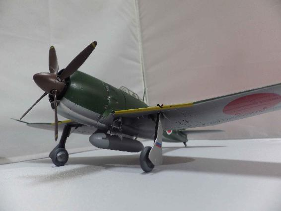
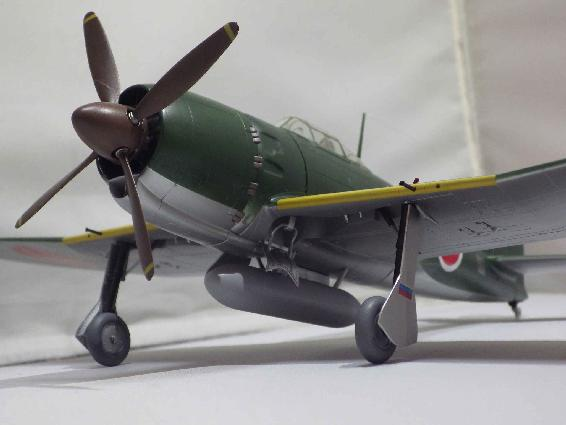
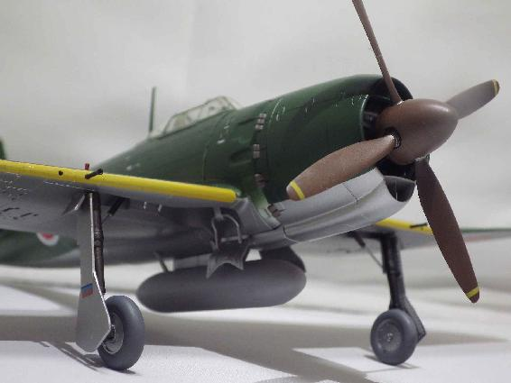
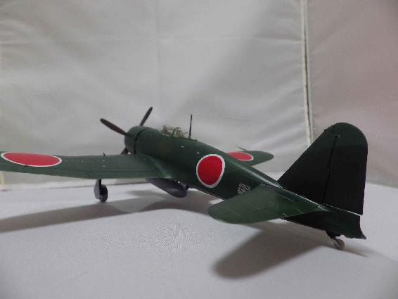

| 翼をもった旭日の魔女～ソロモンの空に舞う～ (イーデスブックス) | |
| 中七七三 | |
| (2018) | |
白風一花（しらかぜ いちか）
大日本皇国海軍一等飛行兵
独立魔女中隊で、指揮官機である「爆星」の偵察員を務める。
その歌声は全て（敵味方関係なく）電波兵器を無効にする魔女の旋律。
索敵能力は「人間レーダー」、複雑な爆弾の緒元計算も暗算でこなす異能の少女。
久遠九蔵（くおん きゅうぞう）
大日本皇国海軍少尉
元数学の学徒。大学から予備士官として少尉となる。
独立魔女中隊の指揮官として爆撃機「爆星」を操縦する。
操縦の腕は水準以上。
緋川二葉（ひかわ ふたば）
大日本皇国二飛曹
独立魔女中隊で烈風２２型を操る。
念話による連携と、異能ともいえる空間認識能力を持つ。
単機戦闘であっても、操縦能力は皇国海軍航空隊の中でも互角に戦えるのは数えるほど。
ただし、色街出身で、性欲が異常に強い。
三恵（みつえ）・ドライシュテイン
大日本皇国海軍二飛曹。
父親がドイツ人技術者で日本に帰化している。念話、空間認識能力の高さは二葉と互角。アメリカをバカにしている。ドイツ人の血が流れていることを誇りと思っている。
黒城四織（くろき しおり）
大日本皇国海軍飛曹長
独立魔女中隊の小隊長として、二葉と三恵を指揮する。
冷静に見えるが、むしろ冷淡で、感情の起伏が無い。
一見、深窓の令嬢に見える美少女。
桃園零子（ももぞの れいこ）
大日本皇国海軍少佐
久遠少尉の直接の上官。
軍人精神の塊、護国の鬼、戦争中毒者、殺戮機械の異名を持つ。
敢闘精神と勇猛さは誰もが認めるが、あまりにも尖りすぎた性格のため、持てあまされている存在となっている。
■陸上攻撃機爆星
大日本皇国海軍の陸上攻撃機。連合国軍のコードネームは「アシュレー」。
１９３７年に計画された爆撃機護衛用の双発戦闘機計画が、陸軍との機材共用にともない中止。
（キ４５ 屠龍が陸海軍共用機となった）
１９３９年、空技廠へ開発命令の下った「十四試双発陸上爆撃機」（のちの銀河）があまりに実験的すぎると危惧をもった海軍当局により、その控的意味合いで三菱航空機に対し開発命令のかかった機体である。
当初は、陳腐化し防御力に問題のあった一式陸攻の後継として「攻撃機」として開発されていたが、実機の機体強度を上げることが可能となり、急降下爆撃も可能となった。
ただ、銀河が爆撃機とされたため、事務上の手続きの上で「攻撃機」に分類された。これについては、紆余曲折があったが、詳細についてはまだ研究の途上にある。命名基準のみが爆撃機の「星」を表すものとなった。
１９４４年以降のソロモン方面の航空戦で活躍し、１．５トンのロ式大和弾（戦艦大和の砲弾改造）を搭載（この際の航続距離は大きく落ちる）し、アメリカ機動部隊に対する高速突破、攻撃を可能とした唯一の機体となった。
全幅：１５．０５メートル
全長：１２．８０メートル
自重：６５,００キログラム
最高速度：時速６４０キロメートル
航続距離：４５,００キロメートル（過荷重）
武装：１３．２ミリ機銃×４、３７ミリ機銃×１（１１甲型のみ）
爆弾最大搭載量：１．５トン/９２式航空魚雷×１
■艦上戦闘機「烈風」２２型
大日本皇国の艦上戦闘機。連合国のコードネームは「サム」。
１９４０年に三菱航空機に十五試作艦上戦闘機として開発命令が下り、９６式戦闘機、零式艦上戦闘機とヒットを飛ばしていた堀越次郎を設計主務者として開発された。これには、十四試局地戦闘機（後の震電）の開発を九州飛行機に移管したことが航空行政上の成功と評価されている。
九州飛行機に開発が移管された十四試局地戦闘機「震電」が特異なエンテ型（先尾翼）の機体となった。三菱飛行機では、紡錘形の機体設計を想定していたという史料が残っている。
烈風は当初、誉エンジンの出力不足により性能計画値出すことができなかったが、三菱で開発中の金星エンジンを十八気筒化したエンジンとの統合が図られた。結果生まれた「魁エンジン」が２２００馬力地上を計測。
烈風を生き返らせた。
烈風１１型から２２型へ魁エンジンの馬力強化に伴い、大きく性能も上がり、１９４５年以降に出現した連合国のどのような戦闘機とも互角以上の戦闘が可能といわれた。特に中低高度での性能は、当時実用化されつつあったジェット推進機以上と評価されることもある。
全幅：１１．５６メートル
全長：９．８６メートル
自重：２,８６０キログラム
最高速度：時速６８９キロメートル
航続距離：１２００キロメートル＋空戦３０分
武装：１３．２ミリ機銃×２、２０ミリ機銃×４
爆弾最大搭載量：２５０キログラム×２/４式短魚雷×１
■モデリング写真提供 神雷工房様（http://jinraikohboh.web.fc2.com/）




「莫迦な......」
久遠九蔵少尉はマフラーの下の口から呟きをもらす。
二式高等練習機のエンジン音が彼の呟きをかき消していく。
一対一の模擬空戦――
同高度反航戦であり、同高度ですれ違ってから空戦を開始する。
操縦桿を引き、フットバーを蹴飛ばす。
習い覚えたあらゆるマニューバを繰り出す。
しかし、相手はもてあそぶかのように悠々と着いてくる。
（坂井少尉からでも、三本に一本は引き分けにできる俺が......）
練習航空隊の根拠地になっている大村海軍航空基地で随一の腕前の坂井少尉のことが頭によぎる。
負傷により一時的に教官配置になっているが、その腕前は海軍でも至宝とさえいわれる歴戦の搭乗員だ。
皇国海軍有数の撃墜王相手にある程度、戦っていた自分がまるで子ども扱いだった。
久遠少尉は無茶苦茶に機体を振り回す。
エンジンが叫び、翼が軋む。天地がぐるぐると回転する。
マイナスＧで胃袋が浮き上がってくる。
「なんでついてくる！」
『もう、降参でいいんじゃないかな。少尉』
久遠少尉の脳内の声が響く。
「なんだ！ なんだ！ いったい？」
『念話だよ。少尉は受信できるんだよね～』
無線ではない。念話だと･･････
この科学戦を展開している２０世紀に信じられない言葉が脳内に流れ込んでくる。
ただ、幻聴でないことだけは確かだった。
とにかくだ――
４回の模擬空戦で久遠少尉は全敗した。０勝４敗である。
しかも、一方的にやられまくり、まったくいいところがなかった。
（これが異能の力か......）
圧倒的な空間認識能力と運動神経を持った存在。
その相手との空戦である。
負けて当然ではあろうという思いは無いではないが、それでも女に負けまくるのは屈辱だった。
練機から降りると、坂井少尉がニヤニヤとこっちを見て笑っていた。
普段は抜き身の刃のような雰囲気をもった搭乗員だが、よほど久遠少尉のあがき様が面白かったのだろう。
「おい、一本も、とれなかったな」
「面目ありません」
久遠少尉は真っ赤な顔をして坂井少尉に答えた。
「ま、オレでも三本勝負すれば、あの手この手で引き分けが精一杯だからなぁ～」
「はぁ･･･...」
坂井少尉なりに慰めているのかもしれないが、久遠少尉には慰めに聞こえない。
「貴様！ やはり聞こえるな」
坂井少尉の隣に立っていた士官が言った。
女性の士官だった。
美人であるがうかつに声をかけようものなら、ぶち殺されかねない雰囲気をもっている。
まるで、狂人の刃物のような雰囲気をもった女性士官だった。
「はい。念話は聞こえました」
「いいね･･････ やはりいいねぇ」
にぃぃっとその女性士官は肉食獣の笑みを浮かべた。
そして、久遠久蔵少尉は、大村空から転任となった。
戦場はソロモン。
そして、愛機は最新鋭爆撃に「爆風」に。
通称「魔女独立航空中隊」への配置替えが決定したのだった。
「諸元がこねぇぞ！ 寝てやがるのか！ 電波屋（レーダ手）！」
「ＳＧレーダー、ＳＣレーダホワイトアウト！ 無線も！ 無線も使用不能！」
「対空戦闘諸元、光学照準システムに電路を切り替えろ！」
「僚艦には、光学信号だ！ 奴らだ！ 奴らがくる！」
アメリカ正規空母エセックス級。
すでに、１番艦エセックスは日本海軍の手により海の底に沈められている。
そして、その危機がその姉妹に迫っていた。
エセックス級３番艦イントレピッドだ。
その戦闘指揮所（ＣＩＣ）は、まさに魔女の釜をひっくり返したような様になっている。
混乱と狂気がその空間を支配していた。
「ＣＡＰとの通信不能！ 要撃指示ができません」
「くそったれが！」
第２２空母部隊の指揮官であるトーマス・スプレイグ少将は、帽子を掴んで叩きつけた。
アメリカ合衆国海軍の誇る最新鋭の電子兵装――
ＳＧシュガージョージレーダー、ＳＣシュガーチャーリレーダーのＰＰＩスコープが真っ白になっている。
鳥のクソを大量に投げつけられたような状態だ。
真っ白になったスコープの上を電子の捜索線が空しく回転している。
なにも分かりゃしない。
（また、ヤツラなのか......）
スプレイグ少将が考えた瞬間、その思いを肯定する叫びが上がった。
「奴らです...... 奴らだ...... 魔女だ！ ジャップの魔女だ――」
ＰＰＩスコープの放つ白い光が、蒼白となったレーダー手の顔に映える。
その身体が細かく震えていた。
「歌...... 歌が聞こえる。やはり来ました。間違いありません、ジャップの魔女どもです」
ヘッドホンをした通信員が艦長を見やる。
艦長はひったくるようにして、通信員からヘッドホンを取った。
そして、自分の耳に当てる。
歌だ――
これが、魔女の歌か......
彼の耳には意識が吸い込まれていきそうな透明な声が響いている。
アメリカ海軍ではそれを「歌」と称していたが、本当のところは分からない。
ただ、それが美しい旋律を伴った歌声に聞こえるということは事実だった。
魔女の歌声。
それは、１９４４年１２月のソロモン方面のアメリカ軍にとって、死の前奏曲を意味していた。
『相変わらず、一花（いちか）の電波節すゲェ威力だ！』
『電波節じゃないです！ なんで、そんなこというんですか！』
『いや、褒めてんだけど？ ダメ？』
『二葉ちゃんのは、全然、褒めてるように聞こえないんですけどッ！』
キンキンした声が脳に響く。
合計４５００馬力を超える「誉改（魁）」エンジン２基の爆音関係なしだ。
戦場ではまず、聞くことが無い声音。若い女の声だ。少なくとも機上で聞くことはまずない。
久遠九蔵（くおん きゅうぞう）少尉は顔をしかめる。
操縦桿の手を離して、頭を押さえたいくらいだ。
つまり、いい加減にしろと思うわけだ。
彼は、遠慮なく脳内響く「念話」というのには、いまだ慣れないでいた。
このような「声」を聴くことのできる自分の能力を呪った。
そのせいで、戦闘機搭乗員から車引き（爆撃機操縦員）になってしまったのだから。
『隊長！ 二葉ちゃんが酷すぎ！ せっかくアメ公のレーダー潰したのにぃ！！』
「伝声管使え！ 伝声管！ 脳にビンビン響くんだよ！ 勘弁してくれ！」
「はい。分かりました。隊長♥」
久遠少尉は一瞬ここがどこだか分からなくなる。頭を抱えたくなる。
ここは、戦場だよな。
彼ははラバウル東方、ブーゲンビル島の沖合にある小島「モノ島」の基地から出撃したことを、改めて確認する。
で、今乗っているのは、新鋭の双発攻撃機「爆星」のはずだよな。
久遠少尉は周囲を見やる。ソロモンの蒼穹は青く突き抜けている。雲量は多くない。
視界は良好だ。
「隊長！ ２０度に敵艦隊です！ ああ、いっぱいいます！ アメ公の空母！ 空母がいます！」
伝声管からキンキンとした声が聞こえてくる。
久遠少尉はたまらず後ろを振り返る。
「爆星」の１３ミリ装甲板の隙間から後部座席を見る。
航空帽をかぶってチョコンと座っている物体を見た。
一応、海軍の一等飛行兵。
白風一花（しらかぜ いちか）と言う存在だ。
クリッとした大きな黒い目。
新雪のような白い肌に、ピンク色の頬をした顔。
どう見ても少女というか、女学生だ――
それも、人形のような可愛らしい顔をしている少女だ。
なんで、こんな少女と一緒に戦争をしているのか。
彼は大学で数学を専攻し、予備士官として海軍に入った。
彼は、このようなケースに自分が遭遇する確率を頭の中で計算しようとした。
そして止める。起きてしまった事象の確率など計算しても意味ないからだ。
「了解」
ため息を交えながら、久遠少尉は言った。同時に指示された方向を確認する。
いた――
確かにアメリカの機動部隊だ。
護衛戦闘機（ＣＡＰ）がスズメバチのように飛びまわっている。
しかし、こちらに気付いた様子はない。
なにか、非常に混乱しているように見える。
おそらくそうだ。
一花の「歌」はあらゆる電子兵装をお釈迦にする。敵味方関係なくだ。
だから、この独立中隊は、他の航空隊と同一行動をとれない。
いつも単独作戦だ。
「突っ込むぞ」
伝声管で後部座席に座る少女に伝える。
これでも、一等飛行兵なのだから、しょうがない。
それも、とびきりの戦力となる存在なのだ。
最強の電子戦用兵器といってもいいくらいだ。
一花の「歌」で周囲の電子機器は機能を失っている。
敵は真空管にダメージを受け、しばらくは使い物にならない。
護衛戦闘機の混乱も、母艦からの情報が断たれたためだろうと思う。
混乱状態にある今が好機だった。
『二葉ちゃん、三恵ちゃん、四織ちゃん、隊長が突撃だって！』
久遠少尉の指示が、後部座席の少女を経由して、周囲を飛んでいる搭乗員に伝えられる。『念話』と呼ばれる方法でだ。
戦闘機搭乗員は全員、女だ。
しかも若い。
全部で３機、乗機は最新鋭「烈風２２型」だ。
『敵戦闘機はＦ６Ｆ。機数は......５６機』
『いや、四織。もう一機いるだろ。ほら――』
『あら、重なっていましたわね。あ、もう一機、５８機ですわ』
二葉と四織の『念話』だ。彼女たちはこの距離で機類と機数を正確に判断する。
空間把握能力を瞬間記憶能力、そして演算能力が並みの人間ではない。
その能力に支えられた操縦技術は桁が違っている。
久遠少尉は身を持ってその実力を知っていた。
知っているから、この戦場にいるともいえる。
『ブッさいくな戦闘機！ アメリカ人が造ると何でもデブになるのよね』
少し訛りのある日本語が久遠少尉の脳内に響いた。
父親がドイツ人技術者の三恵・ドライシュテインだ。
金色の髪をしたゲルマン人の血が強く出ている容姿の持ち主だった。
彼女は二飛曹だ。
『はは！ 三恵・ドライシュテインの言うとおりだ』
二葉こと、緋川二葉（ひかわ ふたば）二飛曹の蓮っ葉な感じの声が響いた。
彼女は腕は抜群。見た目は別嬪なんてもんじゃない。
一瞬で目が釘付けになり、心がもっていかれるレベルの容貌。
ただし、素行には問題がありすぎる......
『二葉さん、三恵さん、無駄話は終了です。穴を開けます―― よろしいですね少尉』
三恵と二葉を率いる小隊長が彼女だ。
黒城（くろき） 四織（しおり）飛曹長。
長い黒髪の妖艶な日本人形を思わせる雰囲気をもっている。
一見、深窓の令嬢だ。
『隊長から「了解」です』
後部座席の一花が念話を送る。
彼は脳内に流れ込む、彼女たちの『念話』を黙って聞くだけだ。
こちらから、何かを言うことはできないのだ。
彼女たちは普通の人間ではない。
理由は分からないが、１９２３年に東京湾に隕石が落下した。
それは、関東地方に小規模な地震を発生させたが、影響はそれだけではなかった。
飛散した隕石。
そして、その数年ほど明らかに関東地方での死産が大量に発生する。
隕石の破片が発していた、何かが影響しているのだという話だが、詳しいことは発表されていない。
そして、生まれてきた赤ん坊の中に、チラホラと「異能力」を持つ存在が見つかった。
彼女たちのような存在。
「念話」により相互に会話し、異常なまでの空間認識能力、そして瞬間記憶能力、演算能力を持った存在だ。
そして、彼女たちは軍の研究対象となった。
そして戦争。
彼女たちを前線に出すことには、大きな反対があったという。
あまりにも彼女たちは数が少なく、貴重なのだ。
しかし、もはや大日本皇国はそのような贅沢をできるような状況ではなくなっていた。
（異能の魔女―― 神国の戦巫女―― か......）
久遠少尉は、彼女たちがそう呼ばれる存在であることを思った。
（まあ、ありがたいといえば、国にとってはありがたい存在だ）
彼女たちのような異能の存在が味方であることを、久遠少尉はありがたいと思っている。
ただ、自分が直接の指揮官になってしまったことについては、別の思いを抱いていた。
見事な３機編隊の戦闘機が前に出た。
凄まじい加速をみせる。
烈風２２型。
久遠少尉の操る「爆星」と同じ「誉改（魁）」を搭載した単発単座戦闘機。
最大２２５０馬力を発揮する化け物エンジンだ。最高速度は中高度で３５０ノット（約６５０?／ｈ）を超える。
それに、アスペクト比の大きな翼。
翼面荷重は１７０ｋｇ／ｍと大きくなっている。
しかし、自動空戦フラップとアスペクト比の大きな翼が三菱直系の戦闘機の機動性を担保していた。
模擬空戦では、いかなる局面からでも零戦を圧倒することが証明されている。
翼に高初速２０ミリ機関銃を４門。更に機首に１３．２ミリ機銃を搭載している。
単発単座戦闘としては、破格以上の火力だ。
１９４４年時点。
速度、運動性、火力、上昇力、降下性能とあらゆる面でアメリカ艦上機を凌駕する存在だった。
零戦に比べれば、航続距離はかなり落ちるが、３３０リットル増槽を翼下に２個吊下できる。
これで、侵攻戦闘機としても問題ない足の長さを持っている。
まだ、機動部隊ですら、一部にしか行き渡っていない。それだけ貴重な最新鋭機だ。
そして、久遠少尉も「爆星」のスロットルを叩きこむ。
２基の「魁」エンジンが唸りを上げ、四翅プロペラが風を切る。
こちらは低空を進む。
海面高度で３１０ノット（約５７４ｋｍ／ｈ）を超える。
これに追いつける敵機はまだお目にかかったことが無い。
Ｆ６Ｆヘルキャットも、Ｆ４Ｕコルセアでさえも振りきれる。
降下加速から、海面上を高速で突撃する「爆星」を捕捉できる機体は、太平洋上にはまだ存在しない。
降下速度をプラスされ、久遠少尉の操縦する「爆星」は海面高度を凄まじい速度で飛翔する。
一気に、敵輪形陣を突破する。
敵駆逐艦の５インチ両用砲から撃ち出される弾幕が薄い。
一花の「歌」で電子兵装を無力化され、レーダーによる照準ができなくなっている。
ボフォース４０ミリ機銃の吐きだす、凶悪な鉄槌のカーテンも突き抜ける。
「エセックス級か。やるぞ白風一飛」
「了解です。諸元計算入ります」
伝声管から鈴を転がしたような声が響く。
上等だ。
久遠少尉は口元に何とも言えない笑みを浮かべた。
久遠少尉は視界の中に小さな島のような敵正規空母を捉えた。
盛んに対空砲火をぶちまけている。噴火したかのような対空砲火だ。それでも穴はちらほらある。
彼はちらりと上空を見た。
どす黒い煙を吐いて落ちていくＦ６Ｆが見える。翼をへし折られ、グルグルと回転しながら墜ちていく青黒い機体。
『やった！ １機目！ 今日は私、好調な感じ！』
『後ろ！ 二葉！ 後ろですわ！』
『知ってるよってね―― はい、またもらい！ はい２機目！』
『なに、このデブのうすノロ。私も１機！』
『あ！ 四織！ ずるいぞ！ それ！ 今狙ってたのに』
『まだまだいますから、他のを狙えばいいのでは？ 二葉さん』
『もう！ まあ、いっぱいいるからいいけどよ。あははは！』
脳内に戦闘の状況がリアルタイムで久遠少尉の脳内に流れ込む。
彼女たちの空間把握能力と運動神経、思考速度に普通の人間が太刀打ちできるわけがなかった。
おまけに「念話」で連携しているのだ。
ただの３機じゃない。一つの意思で統合された悪夢のような連携を見せる存在だ。
おそらく通信機器もブチ壊れているアメリカ海軍機にとっては、なすすべがないであろう。
「距離７０００。敵速度２９ノット、機速３２２ノット。射角２０度維持。発射位置まで３９．２３秒」
一花から発射諸元の指示が伝わる。
この少女の頭の中がどうなっているか知らないが、三次元起動する航空戦と目標空母の諸元を暗算で叩きだす。
久遠少尉は鋼と火薬の発生させる暴風の中、機体を維持する。
ただの直進では食われる。
機体を滑らせながら、発射位置まで持ってくる。
機体方向に関する指示が、一花から送られてくる。
「きゃあッ！！」
「帝国軍人が悲鳴を上げるな！」
後部座席に向け怒鳴る久遠少尉。
機体のすぐそばで、敵の高角砲弾が破裂したのだ。
ビリビリとした振動が操縦桿を握る手に伝わる。
しかし、大丈夫だ。この「爆星」はとうとう実現した内袋式防弾タンクを装備。
更に、自動消火装置も備えている。操縦席には１００キロを超える装甲板が装着されている。
敵戦闘機を振りきり、敵対空火力に対する防御力を備えた機体。
１９４４年現在、大日本帝国にとって敵空母に堂々と昼の攻撃が行える唯一の機体だ。
「ロ式大和弾。当たれば、いかに頑強な米空母で無事じゃすまない――」
獰猛な笑みを浮かべ、久遠少尉は言った。誰かに聞かせるための言葉じゃない。
彼はフットバーを蹴り機体を横滑りさせる。
「爆星」の爆弾倉の中には、約１.５トンの爆弾が搭載されている。
史上最強の戦艦「大和型戦艦」の砲弾を改造して造り出した異形の爆弾だ。
砲弾に展張可能な木製の翼を装備。更に、ロケット推進薬を備えたバケモノだ。
投下と同時にロケットに着火。０．６３秒の燃焼だが、加速を行う。
そして、折りたたまれた翼が広がり、飛翔距離を伸ばす。
着水の瞬間、その翼は飛散するようにできている。
秒速２５０メートル以上の速度で着水した「ロ式大和弾」は水面を反跳して進む。
更に最後は水中弾として数十メートルを直進する。
上手くいけば、水線下に１．５トンの鋼鉄と火薬の鉄槌を叩きこめる武器だ。
仮に反跳の間に命中しても、無事では済まない。
対魚雷隔壁など、「ロ式大和弾」の前には紙同然なのだから。
「方位そのまま、よーそろー！ 発射５秒前」
伝声管を通じ一花の声が聞こえる。もうここからは進路を変えられない。
この「爆星」の性能を信じて突っ込むしかない。
また、ビリビリと風防が震えた。
「ロ式大和弾投下！」
一花の声と同時に機体がふわりと軽くなる。
前方に真っ赤な炎の尾を引いて黒い物体物体が吹っ飛んでいくのが分かった。
久遠少尉は機体が浮き上がらないように抑え込む。
そして、機体を滑らせる。
（もっとだ！）
更に高度を下げる。プロペラに飛沫が巻き込まれるくらいだ。
敵輪形陣を抜けるまで、安心などできない。
機体を空母舳を抜けるコースに乗せていく。
まだ速度は３２０ノットを超えている。
「命中です！ 少尉！ 命中！」
一花の声。
敵空母の方向を見やる久遠少尉。
ゆるゆると巨大な水柱が天に向かって突き上げてくのが見えた。
「水中弾になったか......」
「そうなるように計算しましたから」
「ああ、そうか」
数学の学徒だった久遠少尉はその言葉を複雑な思いで聞く。
ただ、これで敵空母１隻を無力化出来たことは確かだ。
『お！ 命中か！ やったな一花』
明るい声が脳に流れ込む。二葉の「念話」だった。
『これ、沈みますわ』
『なに？ アメ公空母って１発で転覆？』
四織と三恵の念話も続く。
「ロ式大和弾」の直撃を食らったエセックス級の大型空母は急速に傾いていた。
船体各処から炎と煙を吹きだしている。
（一発か？ 一発で沈むのか）
久遠少尉は、敵空母が脆いというよりは、「ロ式大和弾」威力に恐怖した。
確かに、大ダメージを与えるとは思ったが、一発で３万トンの正規空母が簡単に沈むとは思ってはいなかった。
彼は、こんな剣呑なものを吊るして飛んでいたことに、今さらながらゾッとした。
「敵輪形陣抜けます。機体問題ありません」
一花の声が伝声管から響く。
「了解」
久遠少尉は機体の高度を徐々に上げていく。
そして、上空を見やった。
烈風の小隊。四織、二葉、三恵たちを視野にいれる。
「アイツら...... なにやってやがる」
久遠少尉は唖然としてつぶやいた。
敵戦闘機は見たところ半分くらいに減っている。
しかしだ――
『みんなッ！ 少尉怒っているよ！ やめなよ！ まだ敵いるよ！』
一花の念話。
『あはは！ 構わんだろ？ かかってきたら叩き落すから』
二葉の陽気な声が聞こえる。
「っつたく...... 四織まで一緒になってなにやってんだ」
彼女たちは、三機編隊の宙返りを繰り返していた。
そして、各種の特殊飛行（マニューバ）を披露しだした......。
戦場の空間でだ。
しかし、敵機もそれを遠巻きに見ているだけだった。
攻撃しようとする気配がない。
あまりに、見事な機動に、その気が削がれたのか、それとも半数以上の味方を一瞬で叩き落されパニックになっているのか。
まるで、糸でつながったような連携を見せ飛行する彼女たちに手を出す敵機はなかった。
理由は分からない。
だが、とんでもない話だ。
頭痛がしてくる。
（殺されるわ......）
彼は思う。敵にではない。味方にだ。直属の上官に......
このことが、あの恐怖を結晶化したような上官知られたら、どうなるか......
久遠少尉は、一花の歌で、全ての電子兵装が無効化されていることを本当にありがたいと思った。
「爆星」は、翼面荷重が大きい。フラップなどにより、着陸速度をある程度落しこむことは可能とはなっているが、それでも今までの期待に比べれば破格の速度だ。
とにかく、着陸に関しては相当に神経を使う機体であることは間違いない。
（高性能機の宿命か）
久遠少尉はその辺りは分かっている。
彼はこの「爆星」を愛機として気に入ってもいた。
戦闘機搭乗員から車引きになったときは、落ち込んだりもしたけど、今は元気だ。
双発の高翼面加重機であるが、フラップの工夫で失速特性は悪くない。
しかし、それでも着陸は緊張するものだ。
だいたい、着陸する滑走路が、密林の中のトンネルのようになっているのだ。
飛行学校で、滅多に褒めることの無い教官に「オマエ、天才か？」とまで言わしめたほどの腕を持つ彼にしても、無茶苦茶だと思うしかなかった。
久遠少尉は、敵機動部隊の輪形陣に突撃するのと、さして変わらない緊張感で手が汗で濡れているのを感じだ。
それでも、機体を操り、重い「爆星」を着陸させる。
視界が暗くなる。密林の木々が天井のようになり、陽を遮っているのだ。
速度を落とし、停止した「爆星」に整備員が駆け寄る。
滑走路を空け、機体を掩体に隠すためだ。
ブーゲンビル島の沖合にある小島「モノ島」の滑走路は狭いなどというものではない。
着陸した機体をどけないと次の機体の着陸ができないくらいだ。
久遠少尉は機体を降りた。敬礼する整備員たち。
油で汚れた顔をした若い整備員が、久遠少尉を見つめる。
「少尉、戦果は？」
「ああ、空母を１隻殺（や）った。確実だ」
彼が短く答えた。
ワッっとその場が湧いた。
「それじゃ後を頼む。一花報告だ」
『はい！ 今行きます』
「キサマ、なんで念話だ！」
『こ、航空熱糧食のキャラメルを......』
機体から降りてきた、白風一花一等飛行兵。
口いっぱいにキャラメルを頬張っている。まるで、ネズミかなにかの小動物のように見える。
ぐんにゃりした顔で彼女を見つめる久遠少尉。
しかし、今回の空母撃沈に関して、彼女が殊勲甲なのは間違いない。
間をおかず「烈風２２型」が滑り込むように着陸してきた。
人外ともいえる空間認識能力を持つ彼女たちのとっては、この着陸も日常の動作となんら変わらぬものだった。
久遠少尉はその見事な飛行を視野の隅にいれ、この小基地の司令部に向かった。
◇◇◇◇◇◇
「空母１隻、撃沈確実か......」
密林の木を伐り出して作った椅子に座ったまま、上官はそう呟いた。
そして、懐から「ホマレ」を取り出し火をつける。
思い切り吸いこみ、紫煙を吐いた。
爆星１機、烈風２２型３機の独立中隊。その飛行長だった。
飛行長は丸メガネの奥から、突き刺さる様な視線をこちらに向ける。
桃園零子（ももぞの れいこ）少佐だ。
久遠少尉の直接の上官だ。
皇国陸海軍は、列強の中でも女性を軍に採用する数少ない国だ。
他には、国家体制としては、真逆といっていいソ連くらいしかないだろう。
明治維新における女帝擁立。
その後の国内動乱における、女武者の活躍。
一刻も早く列強に追いつかねば、国が亡びるという切迫感。
歴史的に、女武者が存在し、戦に女が参加することに、それほど文化的な抵抗が無かったのも一因だろう。
とにかく、我が軍には女性がいる。しかも士官もゴロゴロしているのだ。
目の前の獰猛な視線を向けている士官もその中の一人。
いや、その中もでもとびきり厄介な一人だった。
いわく、軍人精神の塊――
いわく、護国の鬼――
いわく、戦争中毒者――
いわく、殺戮機械――
その敢闘精神と勇猛さは誰もが認めるが、あまりにも尖りすぎた性格のため、持てあまされている存在だ。
彼女はすっと椅子から立ち上がる。立ち姿姿勢は、まさに軍人という存在を結晶化し鋳型に詰め込んだようなものだ。
２０代後半、もしかしたら３０代前半と思われるが、その美貌は際立っている。
この基地では、緋川二葉（ひかわ ふたば）二飛曹と双璧ともいえる美人だ。
ただ、この少佐を女として見ている人間は、少なくともこの基地にはいない。
久遠少佐の視線が、桃園少佐の握る軍刀に移動する。激昂すると、すぐに軍刀を抜くことでも有名なのだ。
「いいじゃないか～」
にぃぃ、っと笑みを浮かべ、久遠少尉にホマレを勧めた。
「いただきます」
１本抜き出し手に取った。
「吸え」
「はい」
久遠少尉は言われるまま、タバコを手に取る。
そして、口に加えた。
すっと、桃園少佐の美麗な顔が近づく。
自分の口に加えたままの火のついたタバコを、久遠少尉のタバコの先に付けたのだ。
桃園少佐が息を送り込み、タバコの先が明るくなる。
彼女の吸っていたタバコの火が、久遠少尉のタバコに火に移っていく。
そして、彼女は鋭い視線を一花に移す。
飛行帽を取った彼女の髪は、肩で切りそろ得られた長さだった。
「一花、奴らはどれくらい落した？」
桃園少佐は再び椅子に座った。
そして、すらりとした足を組んだ。
その背後の壁には大きな日章旗が貼ってある。
「はい。３２機は確実です。他に２機が雲間に突っ込んでいきました。最後までは確認できてません」
「であるか――」
吸っていたタバコを手に取って、ヤシの実で造った灰皿にグリグリと押し付けた。
一花は、あの攻撃の最中でも、戦場の様子を完全に把握していた。
４人とも凄まじい能力を持っているが、この一花は特別だ。
神の視点を持っている。
これで、運動神経に問題がなければ、彼女も操縦士になっていたかもしれない。
ただ、戦力としてならば、彼女が偵察員であることの方が大きな意味があった。
「奴らにはよく、休めと言っておけ。久遠少尉、これからも期待している」
桃園少佐の言葉。久遠少尉は敬礼した。
（笑っているよ......）
桃園少佐は、戦争を心底楽しんでいる者特有の笑みを浮かべていた。
まさに戦争中毒者の笑みだ。
その笑みを見て、久遠少尉はゾッとした。
彼は、ここにも、人外の存在がいることを再確認した。
◇◇◇◇◇◇
久遠少尉は、搭乗員宿舎に戻る。
なんの因果か、女だらけの航空隊に配属されて、こんな南方の孤島で戦っている。
最近では、大学でちまちまと数学をやっていた日々が嘘のように思えてくる。
彼は、烈風小隊の搭乗員の部屋に顔を出した。
上官である彼がやってきても、敬礼する者はいない。
まあ、仕方ないと思っている。
彼女たちの「特異な能力」。
それは、精神状態と大きく関わっているらしい。
最近の研究では、このような能力者に、精神的な重圧を加えると、能力が不安定になったり、発揮できなくなると言われている。
下手をすれば、能力そのものが失われるという可能性もあった。
よって、軍隊というガチガチに規則で縛られた組織の中にあり、彼女たちは例外的に自由だった。
作戦行動中の命令だけは絶対ではあったが。
部屋の中には、四織と三恵しかいなかった。
四織は、本を読んでいた。よく分からない最近の作家の書いた「探偵小説」だ。
彼女は本から視線を上げ、興味無さそうに、久遠少尉を見た。
切れ長の目をした日本人形を思わせる顔。そして、腰まである様な長い黒髪。
ただ、その人形めいた顔から、感情を読むことが難しかった。
「あれ？ 二葉は？ ２人だけか？」
久遠少尉は訊いた。まあ、どこに行ったかの予想はついていたのだが。
「あの淫売の売女ビッチは、また兵隊捕まえて、どこかでやってるんじゃないの？」
ドイツ人とのハーフである三恵が言った。
彼女が赤みがかった髪を左右で止めている。
やや青みがかった瞳。外見はいかにもゲルマンの美少女だ。
予想通りの答えが返ってきたことに、久遠少尉は何とも言えない顔になる。
「となると、いつもの掩体壕か......」
「そうね、掩体壕にゴザ引いて、烈風の翼の下で、やってるのではないかしら」
上品といっていい顔をした四織から、何とも言えない言葉がでてくる。
しかも、それが、ほぼ事実なのだから、始末におえない。
「少尉、どうしますか？」
久遠少尉の後ろから声がした。
一花だった。
この四人の中では一番の年少者だ。たしか、まだ数えで１７のはずだ。
まあ、兵隊を食まくっている二葉にしても数えで１８歳。
三恵が同じ歳で、確か四織が２０だったはずだ。
「まあ、いい。好きにやらせておけというのが、上の命令だ。ただ、整備兵が動けなくなると困るが」
二葉は、空では抜群の戦闘機搭乗員だ。
そして、陸に降りると、淫乱、色情狂、売女、淫売、パンスケ、牝イヌとありとあらゆる名を欲しいままにする存在となる。
見た目は、凄まじい美女。いや、年齢からしすれば、美少女といっていいだろう。
色街出身で、幼少期から徹底的にその道を叩きこまれた存在だ。
たまたま、海軍関係者の目にとまり、見出された存在だ。
その海軍関係者が、どこでなにをして彼女を見つけたのかは、軍機となっている。
「ちょっと、様子を見てくるか」
久遠少尉は、烈風の掩体に向かった。
◇◇◇◇◇◇
緋川二葉二飛曹が男漁りをしている最中も、戦争は続いている。
１９４４年、ラバウルを中心とするソロモン方面の日本海軍航空隊は、巨大な物量を誇るアメリカ軍と対峙し続けていた。
大日本皇国の海軍機動部隊による先制攻撃の失敗。
１９４１年１２月８日（日本時間）、真珠湾攻撃部隊は真珠湾直前で敵に発見される。
そして、アメリカ軍の先制攻撃で始まった太平洋戦争。
アメリカ軍は、日本海軍に真珠湾攻撃を断念させた。
しかし、続くハワイ沖海戦で貴重な空母２隻を喪失。
更に、孤立するフィリピン救出のために向かった戦艦を中心とする部隊は、絵に描いたように、日本海軍の漸減要撃作戦に乗ってしまった。
潜水艦による攻撃、陸上基地から発信した日本海軍だけが持つ武器。陸上攻撃による対艦攻撃。
そして、戦艦の数を減らしたうえでの艦隊決戦。
日本側の図上演習では敗北を重ねたこの作戦が、現実では成功に終わった。
アメリカの大敗北であった。
日本側の成功の要因は何か？
後世の歴史家は様々な要因を上げる。
フィリピンを切り捨てきれなかった戦略上のミス。
日本海軍の力を下算した戦術上のミス。
そして、最大の問題はアメリカの先制攻撃でこの戦争が始まったことだった。
しかも、先手を取ったにも関わらず、南雲機動部隊に、エンタープライズとレキシントンを沈められた。
相次ぐ敗北に、太平洋艦隊司令長官、キンメルは更迭。
そして、新たにニミッツ提督がその任に着いた。
続く、１９４２年――
その年はまさに、大日本皇国の絶頂であった。
南方資源地帯の完全占領。
オーストラリアを孤立化させることになるニューギニアの完全占領。
結果、オーストラリアは大きく本土防衛に戦略に舵を切る。
それは、オーストラリアを起点とする反撃が困難になることを意味していた。
１９４２年、日米の空母消耗戦は凄まじいものとなった。
日本海軍は、赤城、加賀、蒼龍を喪失。
アメリカ海軍は、日本以上に悲惨だった。
７隻を数えた太平洋艦隊の空母はサラトガを残し全て魚の住かとなった。
アメリカ海軍は、一時は本気でハワイ放棄まで検討した。
しかし、日本側も相応のダメージを負っていることが分かり、彼らは踏みとどまることになる。
そして、日本は攻勢に出ながら、徐々に国力を疲弊させていった。
１９４３年から状況は変わる。
新鋭エセックス級空母の就役。そして、軽空母インディペンデンス級も続々就役する。
１９４３年にアメリカ海軍は、正規空母、軽空母合わせ１１隻の陣容を整える任部部隊を編制するに至る。
更に、それを補う「週刊護衛空母」が大量の航空戦力を前線に運び込む。
アメリカ軍は、中部太平洋を貫き、一気に日本本土に迫る作戦を開始。
ギルバート諸島の日本海軍前進基地への攻略を開始する。
抗堪性（こうたんせい）の低い。いわゆる敵の攻撃に弱い日本軍の航空基地は、アメリカ機動部隊の前に反撃することもできなかった。
日本海軍は陸上基地により空母の劣勢をカバーする方針であった。
しかし、それが画餅であることが中部太平洋の戦いで分かったのだ。
ただ、それを戦訓として次に生かす時間を作り出したのは、海軍陸戦隊と陸軍将兵の血だった。
ギルバート諸島では、制空権も制海権もない中、頑強な抵抗を続けた。
対地支援のため張り付いていたアメリカ空母部隊に対する薄暮奇襲。
全戦力をかき集め出撃した、日本海軍機動部隊は賭けに勝った。
アメリカ海軍は、多くの空母を損傷し、正規空母エセックス、軽空母２隻を失った。
一方、日本海軍も飛鷹、瑞鳳の２空母を失う。
搭乗員の損失に関しては、無理な薄暮攻撃の結果、日本の方が膨大なものとなった。
しかし、時間が稼げた。
アメリカ海軍は、一時的に下がる。一気にマリアナ諸島まで攻め入る予定が狂ったのだ。
それは日本にとって貴重な時間だった。
航空基地に対する戦訓は、貴重な犠牲により生み出された時間によりマリアナ諸島の要塞化が進む。
アメリカ側も空母部隊単独の島嶼攻撃はリスクが高いという戦訓を得た。
結果、空母部隊による飛び石的なマリアナ攻略は見送られた。
ソロモン海――
ラバウル。
大日本皇国の南方最大の航空基地。
この支柱を叩き折る。
まずは、ラバウルの無力化。
そして、トラック、マリアナへと進行する。
覇権国家アメリカの計画は変更された。
アメリカという巨大なエネルギーの塊は、その攻撃の矛先をソロモンに向けた。
鋼と火薬と電子の凶悪な暴風雨。
それが、ソロモンの海と空に発生する――
久遠少尉のいる１９４４年末のソロモンとはそのような場所であった。
「なんだこれは？」
烈風の掩体壕に着いた久遠少尉は声を上げた。
死屍累々だった。
１０人以上の整備兵。いや、整備兵だけではない。警備の兵までそこでひっくり返っている。
しかも、全員がここでなにをやっていたか、丸わかりの状態のまま倒れている。
掩体の中に、それと分かる匂いもこもっている。
（この基地を全滅させる気か......）
久遠少尉は駆け寄って、倒れている整備兵を抱き起した。
なにが起きたのかは想像がついている。
「おい大丈夫か？」
久遠少尉は、パンパンと頬を叩いた。
まだ若い。おそらくは補充員として最近、島にやってきた兵だろう。
ここにいる兵の多くは、すでに二葉に食われまくり、その恐ろしさも知っている。
中には、何度も挑むバカもいたが、大半の男たちは逃げ腰になっている。
「す、吸い取られる...... カラカラに......」
その兵は、虚ろな目で少尉を見つめる。そして、かすれるような声で久遠少尉に訴えた。
彼はゆっくりと、その兵を地に置いた。
久遠少尉にできることは、軍医にこの惨状を伝えることだけだった。
◇◇◇◇◇◇
「緋川二飛曹――」
久遠少尉は、やっと見つけ出した緋川二葉二飛曹を、宿舎に連れて帰った。
見つけたときには、新たな獲物の上にまたがっている真っ最中だった。
白い肌と対照をなす長い黒髪が舞うように揺れていた。
哀れな、獲物は泡を吹いて、白目をむいていた。
この女を放置しておくと、本当にこの基地が機能停止しかねない。久遠少尉は確信する。
人員の入れ替わりがあったせいで、二葉二飛曹の恐怖を知らぬ兵が増えているのだ。
整備部門、警備部門、主計部門の方にも、改めて注意を促すように手配しなければと、彼は思う。
「突撃一番使っているから、病気とか孕む心配は無いと思うけど？」
長いまつ毛の下の大きな瞳を久遠少尉に向け「なにを気にしているの？」と言う表情で彼を見つめる。
罪悪感も羞恥心も全く欠落している。
ただ、彼女に過度の注意はできない。
彼女たちの異能は微妙な精神のバランスの上に立っている。
常識はずれの行為であるが、咎めることはできないのだ。
「とりあえず、ほどほどにしてくれないか。相手が気絶するまでやるのは......」
「え～、そんな加減出来ないと思うよ」
「そうかぁ......」
「そうだよ」
言葉に詰まる久遠少尉だった。
しかし、彼女は不思議と、久遠少尉には何も仕掛けてこない。
久遠少尉は日本人としては背が高い。１８０センチはないが、それに近い。
そして、落ちくぼんだ目は、多少相手に気難しいという印象を与えるが、二枚目といっていい顔をしている。
そんな彼に、二葉は一切手を出してこない。
久遠少尉自身は、自分が直接の上官だからだろうか、と理由を考えていた。
その理由を本人に訊く気は無い。藪蛇になってしまっては、エライことになってしまうからだ。
彼女は十分に魅力的だが、戦場で体を壊したら死んでしまう。彼はまだ死にたくはなかった。
「とにかく、なんとかするので、無差別襲撃はやめよう」
「ん～、少尉がそこまで言うなら、そうする」
屈託のない笑顔を向け、彼女は少尉に言った。
「まあ、そうしてくれると助かる」
黒く大きな瞳。そこに影ができるほどの長いまつ毛がスッと沈み込む。
本当に寒気がするほどの美少女だ。
この存在に誘われたら、そりゃ断るのは難しいだろうとは思う。
しかし、底なしの彼女に付き合える男など、ほとんどいないのだ。
この件は、主計、整備、警備の各人員から、「慰安夫」を順番に差し出すことで解決する。
ここに至っても志願者が多く、軍による強制性は一切無かった。
◇◇◇◇◇◇
年は１９４５年に変わろうとしていた。
ここ最近は、敵艦隊の活動が低調だった。
前回、久遠少尉の指揮する独立中隊の攻撃でエセックス級の空母が沈没。
続いて、ラバウル方面から出撃した陸上爆撃機「銀河」による薄暮攻撃で、敵の機動部隊は大きなダメージを受けたようだった。
「銀河」は当初はエンジンを「護」、そして「誉」。誉の不調から「火星」に変更。
現在は「誉改」ともいえる２２５０馬力を発揮する「魁」を２基搭載し、高速重爆として海軍の主力を担っている。
比較的平穏な日々の中、久遠少尉と独立中隊のメンバーは、司令部に呼び出しを食らった。
椅子に座っている桃園少佐。彼女は、ホマレを咥えたまま、こっちを見つめていた。
メガネの奥の鋭い視線に晒されている。
「これが、ラバウルの司令部から来た――」
コロンと巻物のようなものを、桃園少佐はテーブルの上に置いた。
現地の木材を伐採して、作った簡易なテーブルだ。
久遠少尉には、それは金属製の筒に見えた。
（通信筒か？）
彼は思う。
「ちょっと、読んでみろ。少尉」
そう言うと、桃園少佐は、吸っていたホマレをヤシの実の灰皿にグリグリと押し付けた。
「はい」
久遠少尉はその通信筒を手にとり、目を通す。
それは英語で書かれていた。
「少尉、読んで、読んでよ！」
背の低い一花が伸びあがるようにして覗きこんでいった。
「少尉、読め―― 声に出して読め。翻訳しろ」
久遠少尉は、英語の翻訳はあまり得意ではなかったが、なんとか読むことはできた。
--------------------------------------------
親愛なる、ジャップの牝犬の糞魔女の皆様
先日、ガダルカナル沖、空母艦隊上空の特殊飛行、私たちは素晴らしい時間を持っていたことは一つ感謝する。
しかし、私たちは行われていることをいつもまでも許さないでしょう。
私たちは、ジャップの牝犬の糞魔女をソロモンの空からはたきおとすために米国から来たところです。
それは、幸いなことに、ガダルカナルの飛行場で、戦闘機は私たちによって使われます。
私たちは、ジャップの雌犬の糞魔女にとっては強すぎるので、彼女たちは勝ことができません。
是非、ジャップの牝犬の糞魔女はガダルカナルに来なければなりません。
それは、死ぬためです。
アナタの愛する黒山羊隊より
----------------------------------------------
彼はその英文を翻訳して読み上げてほっとする。完ぺきな翻訳だった。我ながら。
帝国大学出身の面目をほどこせたと思ったのだ。
久遠少尉の翻訳を聞いて、彼の部下たちの少女はポカーンとした顔をしている。
彼自身は頭が次第に冷静になり、この英文の内容を本当の意味で理解するにつれ、紙を持つ手が微妙に震えていた。
それは、先日の四織、二葉、三恵の敵艦上空でのアクロバット飛行披露が、バレたことを意味していた。
そして、その返答がこれなのだ。
なんで、そんな余計なことをするのだ？ 米軍は？
久遠少尉は馬鹿げた内容の書面を再び見つめた。
そして、目の前にいる上官を見た。血塗られた兇刃のような視線でこっちを見ていた。
その上官がゆっくりと血の色をした唇を開く。
「久遠少尉」
「はい！ 少佐」
直立不動の姿勢で返答する久遠少尉。
桃園少佐は、軍刀の柄で、クイッと久遠少佐の顎を持ち上げる。
彼女のメガネの奥の目がスッと細くなる。
「キサマ、帝大を出てるのだよな？」
「はい」
「その英語力でか......」
意外なところを突っ込まれ、とまどう久遠少尉。
自分としては完ぺきな訳のはずだったが？
「自分の専門は数学で語学が苦手なのです」という言葉が彼の喉元まで出かかる。
しかし、堪える。
そもそも、問題はそこではないからだ。
敵空母上空での、特殊飛行の実施。それは明らかに挑発行為だ。
絶対にそこを問題にしてくるはずなのだ。
久遠少尉は、自分の女性上官を見つめる。
メガネの奥の切れ長の目は寒気のするような光を湛えている。
まるで、顔の目以外の部分が漆黒に包まれ、目だけがその空間に存在しているような錯覚を覚えた。
「まあ、いい――」
すっと軍刀の柄を下ろしながら、桃園少佐は言った。
その唇がＶの字を描く笑みの形になっている。
そして、椅子に座り背もたれに身をあずけた。
女性であることを必要以上に強調する胸。そのポケットからホマレを取り出し、火をつける。
そのまま、グッと吸い口を噛んで、久遠少尉を見つめた。
「え～、どういうことなんですか？」
一花が「私は、全然分からない」という顔で少尉を見つめる。
「あ～、あれか？ 私たちの特殊飛行が素晴らしかったという、感謝の手紙か？ アメ公から」
長い黒髪の頭に手を突っ込みながら、二葉が言った。
その動作一つが、男の本能を刺激するように出来ているとしか思えない存在だ。
空では、敵戦闘機を地獄に叩きこみ、地上では味方の公序良俗をカオスに叩きこむ存在。
それが、緋川二葉二飛曹という者だった。
「そんなわけないでしょう」
黒城四織飛曹長が、冷静な声で言った。
それは正しいと久遠少尉も思う。
「そうだな。そんなわけがない――」
紫煙を吐きながら、桃園少佐が言った。
「ふーん、そうなんだぁ～」
二葉が「じゃあなんだろ？」と考えているような表情で言う。
彼女の場合は、なにも考えていない可能性もあることを、久遠少尉は知ってはいたが。
通信筒の文章を、三恵がチラッと見た。
「挑戦状じゃないの？ これ？ デブのアメ公の分際で、挑戦？ はは？ 笑っちゃう」
日独ハーフの三恵が言うように、これは挑戦状だった。
「えー、そうなの？ 少尉の翻訳じゃ全然分からなかった。で、どうするの？」
一花が声を上げる。もう、お前にはキャラメル分けてやらんと久遠少尉は思った。
「そう、挑戦状、果たし状とも言うがな―― 久遠......」
再び立ち上がる桃園少佐。
トン、と軍刀の柄の先で床を叩く。
そして、ゆっくりと刀を抜いた。
濡れたような光を刃が放っていいた。
「少尉、なぜこうなった？ んん～」
軍刀の鋭い切っ先が、完全に久遠少尉の目の前にあった。
「はい！ 私の責任です！」
久遠少尉は直立不動で叫ぶ。それしか言いようがない。
視界の隅にいる部下たちは「関係ない」「私は知らない」と言う顔をしている。
一花は、なにが起きているのか、理解ができてないようだ。
二葉は、長い髪の毛を白い指で弄っている。
三恵は、「アメ公なんで返り討ちにすればいい」というような顔をしている。
四織は、本当に我、関せずという態度だ。一応、小隊長なのに......
彼女たちは貴重な異能者だ。戦闘行動以外で、煩わしい目に合せないのが、少尉の役目でもあった。
その点、この少尉は割り切っていた。
「我が軍は戦（いくさ）をしてるんだ。いいか？ １人でも多くのアメ公を叩き落せ。遊んでる暇なんかないんだよ――」
「今後、注意します！」
「よし、叩き潰せ――」
「はい、叩き潰します」
久遠少尉は復唱する。皇国海軍では上官命令は絶対だ。
「え～、なにを叩き潰すの？ また空母？」
一花が言った。
女学生のような、まだ可憐と言っていい外見であるが、この飛行隊の中では、とびきりの異能者だ。
歌声で電子兵装をお釈迦にし、凄まじい演算能力で反跳爆撃の弾道計算も行う。
運動神経は凡人以下なので、偵察員であるが、それでも皇国切り札とも言っていい存在だ。
「この、黒山羊隊ってやつでしょう。一花」
「三恵ちゃん、なにそれ？ 山羊？」
「さあ？」
日独ハーフ娘が、久遠少尉を見つめた。
久遠少尉が口を開こうとした瞬間、別の声がその答えを発した。
「米海兵隊、その航空隊のチーム名でしょうね。ちょっと聞いたことがありませんが」
ここが戦場であることを忘れてしまうような上品、涼やかな声。四織の声だ。
「そうだろうな」
久遠少尉は辛うじてそう口にする。
つッ、と桃園少佐が移動する。黒板がある。その黒板の脇に大きなソロモン方面の地図が貼ってある。
ドンと拳で、その地図を叩いた。ビリビリと部屋の中の空気が震える。
その場所は、ガダルカナルだ。今や、アメリカ機が山のようにいる。ソロモンの大拠点となっている島。
「その、生意気な黒山羊を潰せ。奴らを生贄の山羊にしてやれ――」
桃園少佐は獰猛な笑みを浮かべ、久遠少尉、そして異能の飛行少女たちを見つめた。
ソロモンの空で果し合いが行われようとしていた。
アメリカ、ガダルカナル基地の航空隊司令部。
そのスピーカーが雑音混じりに、音を立てていた。
「また、魔女か......」
基地司令官のレスリー少将はつぶやく。
苦虫をかみつぶしたような顔だ。
アメリカ・ガダルカナル基地の航空隊司令部は騒然となっていた。
基地内のスピーカーが乗っ取られ、魔女の歌声が響いているのだ。
透明感のある声だった。
しかし、それはいつもの日本語ではなく、たどたどしくはあるが英語だった。
それも、酷い英語だ......
『バーカ、バーカ、売春婦の息子ども♪
ケツの穴舐めてろマヌケのウスノロで♪
ドアホウのチ〇コ頭のチ〇コ吸い♪
母親に突っ込む最低野郎だよ～♪
最低クズのウンコたれだから死ね、鬼畜米！
悔しかったらそっちから出てくればいい♪
バーカ、バーカ！
黒山羊死ね。
殺すぞ米海兵！ 飛んで来い。腰抜け野郎♪』
ありとあらゆる英語の罵倒語を網羅し、並べた歌が、美しい旋律とともに流れてくる。
基地内のレーダーサイトは全て沈黙。
通信も不能になっている。
「来ます！ 双発機です！ "アシュレー"です！ ジャップの新鋭機」
アシュレーとは双発複座攻撃機「爆星」の米軍コードネームだった。
対空監視所からの伝令員が司令部にすっ飛んできた。
電子装備が全てイカれてしまうため、有線電話すら使用ができなくなる。
まさに「魔女の歌」だ。
「対空戦闘は！ 高射砲は？」
「光学測距による諸元伝達ができません」
「くそが！！」
高射砲にデータを送り込む回線までぶち壊れていた。
ガダルカナル基地からは辛うじて、散発的な対空機銃が撃ち出されるだけだった。個別照準の反撃だ。
戦闘機のスクランブルなどできない。
また、出来たとしても、最高速度４００マイルを軽く超えると思われる「爆星（アシュレー）」の迎撃は今からでは間に合わない。
「敵！ 降下してきます！ 退避！ 退避！」
声が上がる。
日本製の優美でありながら鋭角的なシルエットを見せている双発機はパワーダイブを開始。
滑走路目掛けて突っ込んできた。
細い対空機銃の火箭が伸びるが、それでジャップの機体を止めることはできそうになかった。
「投弾！ 敵機投弾！」
爆星からは礫のような黒い物体が切り離された。
それは真っ直ぐに、滑走路のど真ん中に命中。
瞬発信管だったのだろうか。
暴力的な空気の塊が辺り一帯に吹き荒れる。
１５００キログラムの大型爆弾が着弾したのだ。
凄まじい爆発音と爆風で周辺施設までビリビリと揺れる。
「ジャップの奴、ダムでも破壊するつもりかよ！」
タコツボの中に身を隠した米兵の１人が叫ぶ。ただ耳がワンワンと唸り、自分の声もよく聞こえなくなっている。
「ジーザス......」
司令部から、滑走路を見たレスリー少将がつぶやく。
ブスブスと地面が焦げ付き。隕石が突っ込んできたようなクレーターが出来あがっていた。
どこの三流パルプ・マガジンのＳＦの描写なんだと思うくらいだ。
◇◇◇◇◇◇
「少尉！ 滑走路のど真ん中に大穴です！」
伝声管を通じて一花の声が聞こえる。
「そうだな」
久遠少尉は短く答えた。
念話ではないが、キンキンとした高い声は変わらない。
別に耳触りと言うわけではないが、攻撃機の操縦桿を握りながら聞く声としては違和感がある。
彼はまだそれに慣れなかった。
「しかし、こんな穴なぞ、奴らすぐ埋めちまうからな――」
米軍の土木作業の機械力については、士官レベルであれば周知の事実といってもいい。
そして、ガダルカナルには、滑走路が複数本存在していることも明らかになっている。
１５００キログラムの大型爆弾を１個くらい落としてもあまり意味が無い。
本当は多数機で、小型爆弾をばらまくのが常道だ。
ただ、対艦攻撃に特化した「爆星」には、小型爆弾を搭載する場所が無い。増槽を外せば、２５０キロ爆弾を両翼に１発づつ搭載できはする。
しかし、それでは長距離侵攻は不可能になるのだ。
そして、対地攻撃には２５０キロ爆弾ですら大型といっていい。
５０キロ程度の爆弾を多数ばらまくという陸軍の方式が飛行場攻撃では正しいといえた。
久遠少尉にも、上官の桃園少佐もそんなことは１００も承知だ。
ただ、機材的に出来ない物はできないのだ。よって、１５００キロの爆弾を叩きこむしかない。
まあ、敵の恐怖感は半端ではないだろうとは思う。
「少尉！ 私の発音どうした？ 英語になってました？ 桃園少佐の原稿を、三恵ちゃんと一生懸命練習したから」
一花が明るく言った。一応の任務成功で、気分が高ぶっているのかもしれない。
敵電子機器を無効化する一花の歌声。
いつもはただの鼻歌のようなものだ。
今回は、英語の歌を作ってアメリカに聞かせるという方法をとった。
英文の歌詞は桃園少佐が書いた。
なんで、こんなに英語の罵倒語を知っているのか？ と思わせる歌詞だった。
それを、英語の発音が一番正確な、日独ハーフの三恵が指導。
歌・作曲：白風一花一等飛行兵
作詞：桃園零子少佐
英語指導：三恵・ドライシュテイン二飛曹
と言う人員で、米軍を挑発する魔女の歌が完成したのだ。
「ねー、少尉」
「ん、なんだ？ キャラメルか？ 好きに食っていいぞ」
航空機搭乗員には、航空熱糧食として、甘いものが機内に搭載されている。
一花は、キャラメルとかチョコとか甘い物が大好きなのだ。
でかい練乳の缶詰を抱えて混んで、それを一気に食べたことがある。
「それも、もらうけど。少尉。この歌の日本語の意味ってなに？ "ふぁっく" とか"こっくさっかー"とか？」
「すまんな。俺は数学専門で、軍隊専門用語は詳しくないんだ」
「そっかぁ～、帝大でも習わないよね。軍隊の専門用語は......」
「意味が知りたければ、三恵か少佐にでも聞いてくれ」
「うんそうする」
明るい声で一花は答えた。久遠少尉は何とも言えない気分となった。
◇◇◇◇◇◇
「く、く、く、く......」
椅子に座った桃園零子少佐が、抑えきれない愉悦を漏らすような笑い声を上げていた。
軍服の寸法が合っていないのではないかと思わせるくらい、胸はパンパンになっている。
ただ、この少佐を前にして、そんなところに視線を固定する勇気は久遠少尉にはなかった。
「少佐、なにが――」
久遠少尉は、不発弾の前に立つような気分で、言葉を発した。
桃園少佐は、口に加えていたホマレを一気に吸いこむ。
一瞬で吸い口近くまで灰になる。
それを灰皿に捨て、紫煙を吐きだした。
煙に包まれた顔が、刃物が笑ったように見える。
「奴ら、平文で発信しやがった」
そう言って、少佐はテーブルの上にその電文が書かれた紙を置いた。
「読んでみろ。少尉。ちゃんと日本語に翻訳済だ」
久遠少尉は、言われるまま手に取った。
そして目を通す。そして、もう一度読んだ。
（おいおい、ヤクザの喧嘩か？ これは戦争だろ？）
久遠少尉が真っ先に抱いた感想だった。
「どうだ、色々やってみるもんだな」
「しかし、司令部はなんと...... これは軍事作戦と言うより『私闘』では？」
「それを言うなら『決闘』だろう。いいじゃないか。面白い」
その電文には、日時場所が指定され、そこにやってこいと書いてあった。
日本軍の魔女航空隊と正々堂々、同じ機数で勝負してやるとある。
そして、叩き落してやると――
以前の通信筒にあった「黒山羊（ブラック・ゴーツ）」の名前があった。
戦争はスポーツじゃない。
なんだ？ これは。
「ラバウルには、報道カメラマンもいたな...... 撮影させるかぁ」
背もたれに身をあずけ、天井を見ながら、とんでもないことを言い放つ少佐。
この女は戦争をなんだと思っているのか？ 娯楽か？
「しかし、少佐、これは危険です」
久遠少尉は言った。
そんな少尉を釣り目気味の目を更に鋭く釣り上げ見やる桃園少佐。
その目の光だけが暗黒の中に浮きあがっている印象を受ける。
ソロモンは日米航空戦の真っ最中なのだ。
ガダルカナルからは、ラバウル方面に夜間爆撃が続いている。
前衛の日本軍基地には昼間の時間に戦爆連合の洗礼もあるくらいだ。
ただ、このモノ島の基地は、完全に秘匿され、米軍の攻撃は無い。
下手なことをして、基地が露見してしまうことが一番危険だった。
こちらの燃料切れを待って、追跡されたらどうするのか？
実際に、基地の露見を防ぐため、ラバウルを攻撃する米軍機に対する迎撃すら控えている。
この基地の独立中隊にいる異能の彼女たちの役割。
第一に、それは強大な敵艦隊の殲滅だからだ。
陸上攻撃はともかく、真正面からアメリカ機動部隊に航空攻撃を敢行できる戦力は少ない。
「爆星」も量産されつつあるが、数がまだ少ない。
しかも、一花のような存在は、我が軍には彼女一人だ。
彼女無しでは、いかに「爆星」が高性能で、「ロ式大和弾」が圧倒的破壊力を持っていても、攻撃は簡単ではない。
既存の攻撃隊は、米軍の輸送ラインが主な目標になっているのが現実だ。
こんなつまらないことで――
「総力戦なんだよ。今次大戦は――」
まるで、久遠少尉の思考を読んだかのように少佐は言った。
ピンク色をした唇が動く。
「フィルムに収めてやれ。奴ら、米海兵隊の精鋭が無残に死んでいくところを―― 皇国の魔女が、無敵であることを証明するんだよ。
中立国経由で全世界に公開してやる！！ 我らに挑んだことを後悔させ、後世にまでその恥を刻みこんでやるッ！」
笑みを浮かべ叫ぶように言葉を発する少佐。まさしく、戦争中毒者の言葉だ。
「久遠少尉！」
「はい！」
直立不動になる少尉。本能的にこの上官に逆らえないのだ。
思うことは色々あったが、口に出すことはできなかった。
「確か、機体に取り付けるカメラがあったなぁ...... ラバウルにあるかもしれん。取り寄せろ。烈風に取り付けるぞ」
「はい、ラバウルの航空廠に至急確認します」
久遠少尉はそんな機材が無いことを願った。
ただ、カメラをつけると言ったら、二葉、三恵あたりは逆に喜びそうだ。
四織は、ちょっと反応の予測ができない。
頭が痛い。
要件が済んだと判断した久遠少尉は敬礼する。
そして、外に出ようとした。
「少尉――」
少佐の声が彼を呼び止める。
「なんでしょうか？」
「なあ、戦争とは斯（か）くあるべきだ。そう思わないか？ 派手に行こうじゃないか」
その言葉は、ある種戦争のバカバカしさの本質を理解した者の言葉だったのかもしれない。
ただ、戦争好きの、戦争中毒者の戯言なのかもしれない。
久遠少尉にはその判断はできなかった。
ソロモンにおけるアメリカ軍最大の基地となりつつあるガダルカナル。
すでに飛行場は３か所。先日、その内の一つであるヘンダーソン飛行場が日本軍による爆撃を食らった。
そのときに穿たれた巨大な穴は既に埋められ、網上の鉄板が敷き詰められている。
その飛行場近く、パイロット待機上に多くの従軍記者が集まっていた。
カメラのフラッシュが瞬いていた。
「ゴルドン大尉、本気ですか」
「本気だ。奴らを血祭りに上げてやる。ジャップの魔女どもは俺が叩き落す」
男は、新聞記者が集まっている中で豪語した。
ガルゴーリュ・ゴルドン大尉だ。海兵隊所属のパイロット。
黒山羊（ブラック・ゴーツ）隊のリーダであった。
彼はすでに、２６機の日本機を撃墜しアメリカＮｏ.１の撃墜王として知られていた。
この戦争の時代、彼は強いアメリカの象徴となっていた。
「こいつなら、サム（烈風）なんで敵じゃない！」
彼はそう言って、黒に近いブルーで塗装された機体を示した。
それは、グラマン社の送り出した最新鋭機。
「Ｆ８Ｆ ベアキャット」だった。
戦後究極のレシプロ艦上戦闘機といわれることになる機体。
今までの海兵隊の主力機だったＦ４Ｕコルセアより小型だ。
そして、Ｆ６Ｆよりもスリムな機体。余分なものは一切削ぎ落としたようなフォルムだった。
軽量化を考えらえた機体に、強力な２２００馬力のエンジン。
「軽く、小さな機体に強力なエンジン」というコンセプトで造られた機体だった。
その余剰馬力は、凄まじい機動性を発揮する。
海面上昇力が毎分１５００メートル以上。これは初期ジェット機でも追尾が困難な値だ。
そして中高度で７００キロ近い高速を叩きだす。これは米海軍最速だったＦ４Ｕコルセア以上だ。
格闘性能も非常に高い。
米海軍機で、最も格闘性能に優れるＦ６Ｆを模擬空戦で圧倒。
それだけではない、米陸軍の傑作機であるＰ－５１Ｄすらあらゆる局面で圧倒してのけた。
陸軍の関係者が衝撃を受けたくらいだ。
日本海軍機との比較テストも実施されている。
数の上ではまだ主力といえる零式艦上戦闘機５２型をあらゆる高度で圧倒。
そのテストを観戦していた、ある海軍士官は「ジークでＦ８Ｆに対抗するのは死刑台に乗るような物だな」と言った。
そして、日本の最新鋭機といえる「烈風２１型」も圧倒してのけた。
格闘性能で互角。速度、上昇力などほとんどの性能でＦ８Ｆが上回る。
パイロットの技量が互角であるなら、おそらく烈風ですら圧倒してのけるだろう。
「牝犬どもが逃げない限り、叩き落してやる。俺たちにはそれが可能だ」
ゴルドン大尉の言葉に記者たちがどよめく。
アメリカＮｏ.１の撃墜王。
そして、アメリカの技術の粋を結集して最新鋭機。
後は、日本の魔女たちが果たし状を受けるかどうかだけが問題だった。
叩きつけた果たし状に、奴らが応じるのか......
その、決戦の日が近づいていた。
◇◇◇◇◇◇
「少尉、サイダー飲んでいいですか？」
伝声管から高い声が響く。
後部偵察員席に座る白風一花（しらかぜ いちか）一等飛行兵だった。
「こぼすなよ。カメラがあるんだから」
久遠少尉は、相変わらず緊張感のない一花に苦笑をうかべつつ言った。
後部座席には、ニュース映画用に持ち込まれたカメラが乗っている。
最初は、従軍カメラマンを別機に載せ、撮影する予定だったが、さすがにそれは難しかった。
結果として、一花が、撮影を行うことになっている。
彼女の空間把握能力の高さは折り紙つきだ。
高速機動する航空機もきちんと撮影できるだろう。
彼女は、後部機銃を使わせると「空の狙撃兵」と化すくらいだ。
カメラの操作くらいは問題はない。
ただ、少尉はなんとなく釈然としない思いで「爆星」の操縦桿を握っていた。
戦争というより、ヤクザの喧嘩ではないかと思っている。
彼の前方を「烈風２２型」が傘型の３機編隊で飛んでいた。
黒城四織飛曹長、緋川二葉二飛曹、三恵・ドライシュタイン二飛曹の操る烈風。
彼女たちもまた、異能者だった。並みの人間を遥かに凌駕する空間認識能力、瞬間記憶力、反射神経、視力――
一対一で彼女たちに空戦を挑んで、戦えるのは日本海軍の搭乗員の中でも数えるほどだ。
しかも、三対三の編隊空戦になったら、どのような相手でも勝利することができない。
「念話」という能力で空戦情報を瞬時に共有する彼女たちは、空では三人で一つの兵器システムだった。
通常の連携など比較することはできない。
しかも、一花の「歌」が相手の無線システムを破壊する。
前方を飛ぶ、３機の烈風がゆらゆら揺れていた。
（航空弁当を食っているのか）
機上で飲み食いをすると、操縦桿から手が離れる。それは機体の揺れに現れるので、外から見れば分かるのだ。
久遠少尉は、食欲が無かった。とりあえず、水筒からお茶だけを飲んだ。
「高度三〇（３０００メートル）、偏差修正１４、巡航速度２５０ノットで、後２５分で予定空域に到着。げぷぅ～」
ゲップの音付の、一花の報告。こめかみを押さえたくなる久遠少尉。
しかし、彼女の航法は正確だった。
きっちり２５分後――
そこに奴らがいた。
青黒くやけにすっきりとした機体。
３機編隊だ。
そして、その後方に自分たちと同じように、別の１機が飛んでいるのを少尉は見つける。
ヘルダイバーだろうか。
奴らも、こちらと同じことを考えているのだろう。
これを宣伝材料に使う気なのだ。
いったいこの戦争は何なのか？
まるで、サムライと騎士の決闘か？
それとも西部劇か？
久遠少尉は自分がなんともいえない笑みを浮かべていることに気付いた。
ブラック・ゴーツ（黒山羊隊）――
米海兵最強の航空隊。
その精鋭３機が鋭い機動でばらけた。
編隊空戦を避けるためだ。
１対１の空戦――
あからさまにそれを誘っていた。
そして、その動きに烈風が乗った。
３機編隊であるが、単機空戦――
ばらけたＦ８Ｆに対し烈風もばらけて襲い掛かる。
両翼の３３０リットルの増槽が切り離された。
ガソリンの尾を引きながら虚空に吸い込まれていく。
それは、サムライが白刃を抜き放ったような光景だった。
１対１の空戦×３。
ソロモンの空に、通常ではあり得ない戦いが展開されようとしていた。
◇◇◇◇◇◇
『あれ？ この機体、アメ公の機体にしては、デブじゃないわよ』
三恵の念話の声が響く。
彼女の操る「烈風２２型」がグラマン「Ｆ８Ｆベアキャット」の背後を取っていた。
久遠少尉も、そのことが気になっていた。
（新鋭機か？）
敵機のフォルムは明らかに今までの「Ｆ６Ｆヘルキャット」、「Ｆ４Ｕコルセア」とは違っていた。
今までの米軍機とは全く違う。一切の無駄をそぎ落としたような、やけに飾り気のない機体だった。
『速いですわね――』
四織の念話だった。
鋭角的な上昇を続ける「烈風２２型」その上昇にその米軍機が食らいついてきていた。
今まで、Ｆ６ＦもＦ４Ｕも、そして米陸軍のＰ－３８、Ｐ－４７、Ｐ－５１すら引き離してきた烈風の上昇力。
その機体は、それに追いつこうとしていた。
『あはは！ アメ公の最新鋭機か？ 叩き落してやる！』
二葉の念話の声とともに、烈風が太い火箭を吐きだした。
その数は５本。通常、翼に２０ミリ機銃を４門、機種に１３．２ミリ機銃２門を備える烈風２２型。
しかし、今回は、翼に搭載した１門をガンカメラに変更していたのだ。
『くそ！ 逃げやがった！ なんだコイツ？』
久遠少尉も息をのんだ。
その機体は、横転し機体を横倒しにしながら、そのまま上昇したのだ。
どんな操縦をすれば、可能なのか？ それに空力的にもあり得ないような機動だった。
結果、二葉の烈風の攻撃は空しく虚空を貫くだけだった。
「二葉、注意しろ！ 奴らも並みじゃない！」
少尉は、無線に向かって叫んでいた。
おそらくは、小さく軽量化された機体に、強力なエンジンを搭載している。
余剰馬力があのような機動（マニューバ）を可能としているのか――
少尉は思った。
『二葉ちゃん、少尉が注意しろって、手ごわいよ』
久遠少尉の言葉を後部座席の一花が念話で伝える。
『一花、聞こえているよ。少尉の声が無線で。今日は「電波節」やってないだろ』
『あ...... っていうか、「また電波節」ていう～、もう』
この戦いでは、一花の能力である電波兵装を無効化する「歌」を使っていない。
特にレーダを潰す必要がないということが理由だった。
彼女はカメラでの撮影に専念していた。
『ハハッ！ 烈風相手に、格闘戦したいの？ 目茶目茶にしてやる』
地上では味方の男たちを滅茶苦茶にする二葉。空でもまた無敵の存在だ。
おそらく、純粋な操縦技術では、３人の中では一番だろうと少尉は評価していた。
自動空戦フラップと高いアスペクト比の翼は、烈風に無類の格闘性能を実現させていた。
２２５０馬力を誇る「魁」エンジンが唸りを上げる。
縦の空戦だ。
それは今までに無いことだった。
そもそも、アメリカのどの機体も、烈風に格闘戦を挑むなどということはなかった。
それは、死と同じ意味だったからだ。
しかし、この機体は違っていた。
グラマン社が、その総力を結集して産みだした究極ともいえるレシプロ戦闘機。
Ｆ８Ｆベアキャットは、烈風に追従していた。
言葉通り、２匹の闘犬のように、烈風とＦ８Ｆが虚空で絡み合うように飛んでいる。
『くそがぁ！ 死ね！』
ガクンと二葉の操る烈風が姿勢を崩した。上昇中にだ。
フットバーを強烈に蹴飛ばしたのだ。
虚空に描いていた弧を切り裂くように、鋭角的な機動。
烈風が意思を持った存在のように起動する。
それは、日本海軍にだけ伝わる特殊機動（マニューバ）だった。
「ひねり込み」と称される、空中機動のショートカットだ。
一気にＦ８Ｆの背後を取る二葉の烈風。
宙を焦がすかのような太い火箭が走る。
２０ミリ３門、１３．２ミリ２門の弾道が、敵機の翼を叩き折っていた。
黒い礫のように、きりもみしながら、落ちていく敵機――
『あはは！ 私が一番か？ 四織、三恵、手伝ってやろうか？』
『いりませんわ』
『なに言ってのよ。あんな機動、普通の空戦じゃ使えないわよッ！ って、ほら！ 私も終わり！』
三恵の烈風の機銃弾が敵機を撃ちぬいていた。
パイロットに当たったのだろうか、煙も吹かずそのまま落ちていく敵機。
「あれ、空中分解か？」
久遠少尉は独り語ちるように言った。
落ちていく敵機の翼単が剥がれ落ちたのだ。
そして、機体は錐もみに入り落ちて行った。
脱出する気配もなかった。
◇◇◇◇◇◇
「莫迦な......」
ゴルドン大尉は落ちていく仲間の機体を見つめ声を絞り出していた。
二人とも黒山羊隊（ブラック・ゴーツ）の中でも抜群の練度を誇るパイロットだった。
確かに、一方的な戦いではなかったかもしれないが、結果として二人とも叩き落された。
そして、今自分が三人目になろうとしている。
バックミラーにジャップの機体が映っている。
彼は、機体を横に滑らせる。俊敏な動きでＦ８Ｆは反応。今まで彼がいた空間を真っ赤な火箭が通り抜けて行った。
全米軍が恐れる、烈風（サム）の砲撃のような攻撃だった。
ゴルドン大尉は操縦桿を思い切り引く。
余剰馬力の大きなＦ８Ｆが優位に闘うには縦の空戦と判断したからだ。
並みの機体なら、失速不可避の急角度で上昇するＦ８Ｆ。
「チェック６」つまり、６時、後方を確認する大尉。彼は戦慄した。
その烈風は、いかなる機体も追従不可能と思われる機動に楽々とついていきていた。
しかも、距離を詰めてきているように見える。
ガンガンガン！
機体を鉄槌で叩かれたような音が響いた。
被弾した。
どこだ？
動く、操縦系は問題ない。
エンジンもだ。
当たり所が良かったのか......
「糞ジャップの魔女がっぁ！」
ゴルドン大尉は、フットバーを蹴る。機体が横転し、降下する。
空と海が視界の中で混ざる様な急機動だった。
南海の空に、もつれ合うようにして、烈風とＦ８Ｆが飛んでいた。
突き抜けるような蒼空に白い飛行機雲が伸びていく。
７.少尉の修羅場はまだこれからだった
「四織の相手が一番の手練れだな――」
久遠少尉のつぶやきは双発複座攻撃機「爆星」の２基のエンジン音の中に溶け込んでいく。
『あははは！ 四織ぃぃ、何やってんだよ。手伝ってやろうか？』
『３人でなぶり殺しにするのも、いいわよね』
『もう、そろそろですわ――』
二葉と三恵の挑発的な念話にも冷静な四織だった。
彼女は慎重だった。決して無理はしない。
まるで、詰将棋のように敵を追いこむ。
機械のようにミスをしない。
戦場で敵にしたとき、一番やっかいなのは、四織のようなタイプかもしれない。
派手さはないが、一番恐ろしい。
久遠少尉は、敵機を追い詰めつつある烈風を見て思った。
「やった！ 少尉！ アメ公の敵機が火を！」
カメラを操作しながら、一花が言った。
敵機は翼から火を吹きだしていた。しかし、それはやがて小さくなり消える。
黒い煙の尾となった。
アメリカ機の頑丈さは、敵ながら呆れるしかない。
「なんだ！ コイツ、こっちに！」
久遠少尉は声を上げると同時にフットバーを蹴った。
「あ――！！ 少尉！！」
後部座席から一花の叫びが聞こえるがそれどころではない。
青黒くのっぺりした機体が、機首をこっちに向け突っ込んできたのだ。
チカチカと翼が光る。撃ってきた。こっちを狙っている。
『少尉！ 一花！』
『この糞アメ公、なにやってんのよ！』
二葉と三恵の念話。
彼女たちの烈風も翼を翻し、こちらに向かってきた。
久遠少尉は「爆星」を降下させる。
それに追従するＦ８Ｆ。
「あ、分解！ 空中分解！ って...... あれ？」
一花の言葉が止まった。
敵機は、翼端を弾き飛ばすように切り離したのだ。
分解じゃない。あれはそういう仕組みだ。
おそらく、降下中の翼の強度を上げるため、翼端を切り離す仕組みになっている。
久遠少尉はそのことを理解する。しかし、分かったからといって状況が変わるわけでもなかった。
その間も、敵機は３機の烈風に袋叩きにされていた。
火だるまとなりながら、こちらに向け、銃弾をぶっ放してくる。
「キャッ！」
後部座席で一花が声を上げた。
「どうした！ 一花！」
少尉は装甲板の隙間から、後部座席を見た。
「な、なんでもないです。大丈夫です...... かすっただけです」
彼女の声にいつもの快活さが無い。顔色も悪い。
その手にはカメラがない。落としていた。足元でカタカタと転がるカメラ。
「莫迦！ 怪我は！」
「たいしたことないです。本当です」
一花は後ろの方に手を回している。
「おい！ 背中か！」
「違います！ 大丈夫です」
そういって慌てて、押さえていた手を前に出した。
その手には真っ赤な血がついていた。
「おい......莫迦！ 血を止めろ！」
「あッ、落ちます」
一花の声に、久遠少尉は敵機を見た。
火だるまとなった敵機はバラバラになって落ちて行った。
（なんで、こっちを攻撃してきたんだ......）
少尉は思う。いや、自分が甘いのだと思った。
実際、戦争を甘く見ていたのは、自分ではないかと久遠少尉は思ったのだ。
「一花、帰るぞ。大丈夫か？」
「はい...... あの、本当に大丈夫です......」
久遠少尉は操縦桿を握る手に力を込めた。
◇◇◇◇◇◇
帰路にいつも、少尉の分のキャラメルまで欲しがる一花がなにも言わなかった。
久遠少尉は途中何度も声をかけた。
その度に、か細い声で返事をする一花。
意識だけはなんとか、保っているようだと少尉は確認する。
「爆星」と「烈風」は帰還した。
狭い滑走路に降りる緊張感など感じる暇がないほど、久遠少尉は焦っていた。
滑走路に機体を停止させる。
「一花！ 一花！ 着いたぞ！ 大丈夫か！」
「あ、あ、あ、あ、大丈夫です...... 先に、先に降りてください」
「莫迦、なに言ってんだ。どこだ！ どこだ！」
ワラワラと整備兵が集まる。
「衛生兵！ 担架！ 担架の用意をしろ！」
久遠少尉は叫ぶ。
「少尉、大丈夫です。だから、先に...... お願いです......」
久遠少尉はベルトを外すと、操縦席を出た。
そして、後部座席の風防を空ける。
真っ青な顔で、一花が久遠少尉を見上げていた。
その黒く大きな瞳には涙が浮かんでいる。
「い、痛いのか......」
少尉はそういうと、彼女のベルトを外した。
「いや、いいです！ 行けます！ １人で、だから、お願いだからぁぁ！」
パタパタと手を振りまわす一花を久遠少尉は抱えた。
小柄だと思っていたが、抱きかかえたことで、その細さを実感した。
こんな少女が――
「あ―― 止めて下さい！！」
なぜ、彼女がそんなに嫌がるのか。そこまで頭が回らない。
抱き上げた彼女が細かく震えていた。
痙攣か――
「爆星」の翼の上で固まる久遠少佐。
しかしだ――。
集まって来ている整備兵たちの様子が変だった。
下を向いて肩を震わせている人間が何人もいる。
その他には、呆れたようにこっちを見ている兵もいた。
それは、唐突だった。
爆笑だ。
整備兵が笑い出したのだ。
転げまわっている奴までいる。
なんだ、いったい。
「ばかぁぁ～！ 止めてって言ったのにぃぃ～ 少尉のばかぁぁぁ～」
一花が泣きだした。
久遠少尉は状況が分からず、ただ一花を抱きかかえていた。
「し、少尉...... し、尻がっぁ。白風一飛の尻がぁぁぁ、ぎゃはははははは、ゲホゲホ――」
「尻...... 尻？ なにそれ？」
整備兵の１人の言葉に、久遠少尉はつぶやく。
一花は背中ではなく尻を押さえていた。
飛行服が破け、白い肌が露出していた。お尻だ。手で隠してはいるが、お尻が見えているのだ。
しかも、整備兵たちが集まる中、久遠少尉は、乙女のお尻を開帳させてしまったのだった。
「あ、あ、あ、あ、あ～、お嫁にいけないぃぃぃ～、あああああーー！！ 少尉のバカぁぁぁ！！」
帝大数学科出身の明晰な頭脳を持つ久遠少尉は徐々に事態を理解する。
一花は敵の機銃弾を受けた。尻にだ。傷はおそらく大したことないのだろう。
多分、掠めただけだ。でなければ、尻であっても無事じゃすまない。
しかし、飛行服の尻が破れたのだ......
だから、先に行けと言ったのだろう。
「いや、一花ゴメン...... すまん。いや、本当に......」
「あ、あ、あ、あ、あ～ お嫁に行けないぃぃ～。ああああーーん」
泣きじゃくる一花をギュッと抱きしめる久遠少尉。
隠すように腕の部分を彼女のお尻に回した。
そして、そのまま地上に降り立つ。
尻の開帳はともかく、血が出てるのは確かだ。
軍医に見せる。それからだ。
「どけ！ 去れ！ 散れ！ 今見たことは忘れろ！！ いいな！」
笑い崩れる整備員を後にし、久遠少尉は軍医のところに向かった。
抱きかかえられていた一花はいつの間にか、泣くのを止めていた。
そして、ギュッと久遠少尉にしがみ付いていた。
◇◇◇◇◇◇
「こんな、傷、ヨーチン塗っときゃ、一日にで治るわッ！」
いつも酔っぱらっているという評判の軍医が言った。
少尉はそうだろうとは、思いつつ、ホッと胸をなでおろす。
薄い毛布を頭からかぶっている一花。
もしかしたら、これは非常にまずいことではないかと少尉は考えた。
彼女たち、異能者は精神的なショックでその能力を無くす可能性もある。
彼はそのように聞かされていた。
『お嫁に行けない......』
念話だった。少なくとも現時点で一花が能力を無くしているということは無かった。
「おい――」
少尉が口を開きかけたとき、ドアが開き、烈風に乗っていた三人が入ってきた。
四織、二葉、三恵だった。
「なあ、一花、お尻を皆に見せたんだって？ やるなぁ～」
空では敵を落としまくり、地上で男を堕しまくる二葉が声をかけた。
「この淫売の売女のやっていることに比べたら、大したことないわよ。一花」
三恵の言葉だ。まあ、本当のことであるが、あまり慰めになっていない。
「ああああ～ん。ふぇぇぇぇ～ん。やっぱり、お嫁にいけないよぉぉ～」
声に出して泣きだした一花。
「別に、お嫁に行かなくても生きていけるわ」
四織だ。それも正しいとは思うが、この場で言う言葉ではない。
慰めているつもりなのか？
毛布の下で一花は「お嫁に行けない」と泣くばかりだった。
「ふぅぅぅ」っと久遠少尉は息を吸いこむ。
「泣くな！ 一花！」
思いのほか大きな声だった。
久遠少尉の声で、病室内が静かになる。
「戦争が終わって―― 俺が生きていたら、俺がオマエをもらってやる」
久遠少尉の言葉。そして、ゴソゴソと毛布が動く。
ゆっくりと顔を出す一花。
黒く大きな瞳で、ジッと久遠少尉を見つめた。
「本当？」
小さな声で一花は言った。
「ああ」
「じゃあ、死なないで。戦争で死なないで。それも約束して」
「分かった、俺は死なない。大丈夫だろ。『爆星』の後ろにお前が乗っている限り、俺は死なんよ――」
毛布から顔を出している一花が「にへらぁ」という感じで笑った。そして顔が真っ赤になる。
また、毛布をかぶった。
『約束だから―― 絶対に』
念話が少尉の頭に響く。
「あーー！！ 一花、ずるいぃ！ 尻見せて、少尉を墜とすとか！」
二葉だった。二葉が頬を膨らませ言った。
少尉はその言葉の意味を咀嚼できずに、ポカーンとする。
「一花！ アンタ、みんな少尉を狙ってるの知ってるでしょ！ なに！ その手管！ この売女より怖いわよ」
三恵の言葉に、久遠少尉は更に混乱する。「みんな少尉を狙ってる」というのは、どういうことだ？
「別に私は、愛人でもいい――」
四織までもが訳の分からんことを言い出した。
帝大出身の久遠少尉は、ここにきてようやく事態を把握しだした。
思えば、なぜあの二葉が自分にだけ手を出さなかったのか......
そして、一花の態度、他の３人の態度......
コイツら、全員俺を狙って牽制し合っていたのか......
なんだこれは。
ガバっと毛布が飛んだ。一花が跳ね起きた。
「ああー！！ ダメ！！ だって、今のは、少尉から言ってきたんだもん！ 私が少尉のお嫁さんになるの！」
先ほどまで泣いていた気配を微塵も感じさせず、一花は言い放った。
（なんだこれは......）
７０年後であれば「ラノベ主人公」、「鈍感ハーレム野郎」と指摘されそうな状況だった。
しかし、戦争中にそのような概念はない。
そして、「俺は戦争が終わったら結婚するんだ」が死亡フラグであるという概念もなかった。
そう――
全員この戦争を生き残る。
ただ、少尉の新たな修羅場はここから始まることだけは確実だった。
―完―